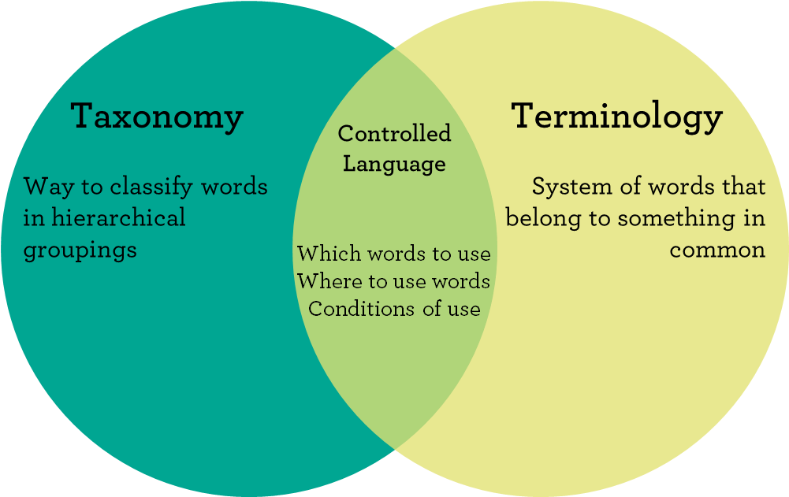
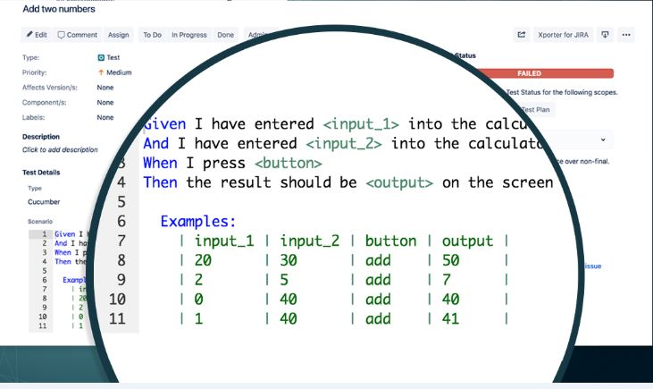

Fast-tracking a DevOps Movement with Jira@ReadySetAgile |
John Riley Principle Agile Coach and Trainer |
 |
 |
### Share Your Experience
---
 @ReadySetAgile
@ReadySetAgile@ReadySetAgile
readysetagile.slack.com
 https://www.linkedin.com/company/ready-set-agile/
https://www.linkedin.com/company/ready-set-agile/
### This is interactive!
---
### DevOps in three words or less
---
### So What?
---
### A look at Lean Principles
---

- Identify Value
- Map value stream
- Create Flow
- Establish Pull
- Continuously Improve
### Proven Recipe for Automated Testing and CI/CD
---
- A Common, Controlled Language
- A Lightweight Refinement Process
- A Common Tool
- A Plan to Scale
### What works?
---

Create a common taxonomy and terminology that everyone understands.
Create mission statements that identify value to stakeholders

Write Acceptance Criteria in User Story issue types using your lightweight refinement process
Track simple metrics
- WIP: count items
on a board - Cycle Time: creation
to delivery - Throughput: rate arriving
over rate departing

Establish CI/CD early to
regulate flow bottlenecks
...and implement tools
that make sense

Scale organically
#### Value-add with Xray Automated testing
---
- Jira Core functions
supported - Integrates with several
CI/CD environments - Integrates with other
testing framework - Export/import or REST API
### Thank you!
---
john@ReadySetAgile.com - John Riley
This presentation is available at https://tinyurl.com/FastTrackDevOps
@ReadySetAgile@ReadySetAgile
readysetagile.slack.com
https://www.linkedin.com/company/ready-set-agile/